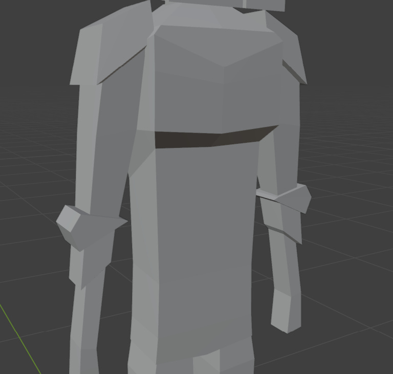

Using a piece of paper with lines to measure how tall my character should be, I drew the front and side view of my character, trying to design it after a medieval knight.
I From looking at my drawing, I can see that I need to make the outline stand out much more, so that they are visible when I scan it.
"no, because the body and limbs looks skinny and blocky."
"Yes."
"Yes and no, because the helmet looks like a knight, but the body does not."
"Not really."
I went over the outline that I already had and made them stand out more, and added more detail to the armor, so that it looked more like a knight.
I made the head of my low poly character, using the turnaround as a reference guide. I created a cube, and then used loop cut to mirror it from one side to the other, I then made it into the shape I wanted it to be.

I am happy with how the head turned out and don't think that it needs any changes
"Yes because it looks like a human would wear it."
"It looks looks like it."
"Yes because it looks like a knight helmet."
"Yes it resembles a knight helmet."
I didn't end up changing the shape of the head because I thought that the first outcome looked good and what I was aiming for.

First I used a loop cut down the middle and deleted the left side and mirrored it from one side to the other, then added more loop cuts throughout the torso to shape it using the turnaround and a modeling guide.
I am happy with how the torso turned out and don't think that it needs any changes
"Yes, because it looks like torso."
"It looks good."
"You could try made it less blocky."
"No, it looks good to me."
I didn't end up changing the shape of the torso because I thought that the first outcome looked good and what I was aiming for in a low poly character.